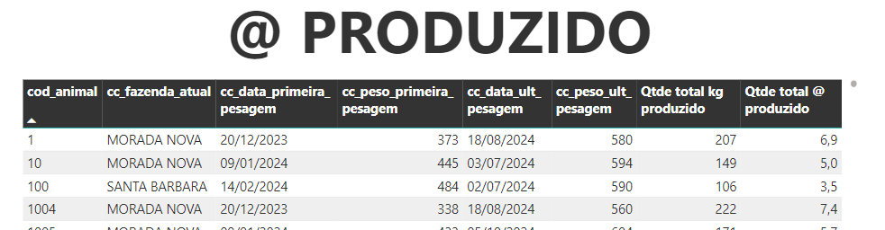

ARROBA PRODUZIDO¶
Cálculo que avalia qual o total de @ produzido desde o início da avaliação dos registros
Explicação do Cálculo¶

Fórmula Matemática:
$$
\text{@_produzido} = \text{soma_peso_atual_rebanho} - \text{soma_peso_inicial_rebanho}
$$
Planilha de exemplo: Clique aqui
Vídeo Explicativo
Ver explicação em vídeo
Fórmulas DAX¶
A seguir estão detalhadas todas as fórmulas DAX utilizadas.
Cálculo final¶
Qtde total @ produzido = [Qtde total kg produzido] / [PESO DA @]
Etapas do cálculo¶
1. Data primeira pesagem
cc_data_primeira_pesagem =
VAR COD_CL = 'CalcInfosAnimais'[cod_animal]
RETURN
CALCULATE(
MIN('CalcAtividadeAnimai'[data]),
FILTER(
'CalcAtividadeAnimai',
'CalcAtividadeAnimai'[cod_animal] = COD_CL
&& ISNUMBER('CalcAtividadeAnimai'[peso])
))
cc_peso_primeira_pesagem =
VAR COD_CL = 'CalcInfosAnimais'[cod_animal]
VAR DATA_PRIMEIRA_PESAGEM_CL = 'CalcInfosAnimais'[cc_data_primeira_pesagem]
RETURN
CALCULATE(
MAX('CalcAtividadeAnimai'[peso]),
FILTER(
'CalcAtividadeAnimai',
'CalcAtividadeAnimai'[cod_animal] = COD_CL &&
ISNUMBER('CalcAtividadeAnimai'[peso]) &&
'CalcAtividadeAnimai'[data] = DATA_PRIMEIRA_PESAGEM_CL))
3. Data última pesagem
cc_data_ult_pesagem =
VAR COD_CL = 'CalcInfosAnimais'[cod_animal]
RETURN
CALCULATE(
MAX('CalcAtividadeAnimai'[data]),
FILTER(
'CalcAtividadeAnimai',
'CalcAtividadeAnimai'[cod_animal] = COD_CL
&& ISNUMBER('CalcAtividadeAnimai'[peso]))
)
cc_peso_ult_pesagem =
VAR COD_CL = 'CalcInfosAnimais'[cod_animal]
VAR DATA_ULT_PESAGEM_CL = 'CalcInfosAnimais'[cc_data_ult_pesagem]
RETURN
CALCULATE(
MAX('CalcAtividadeAnimai'[peso]),
FILTER(
'CalcAtividadeAnimai',
'CalcAtividadeAnimai'[cod_animal] = COD_CL &&
ISNUMBER('CalcAtividadeAnimai'[peso]) &&
'CalcAtividadeAnimai'[data] = DATA_ULT_PESAGEM_CL))
Qtde total kg produzido = SUMX(CalcInfosAnimais, CalcInfosAnimais[cc_peso_ult_pesagem] - CalcInfosAnimais[cc_peso_primeira_pesagem])